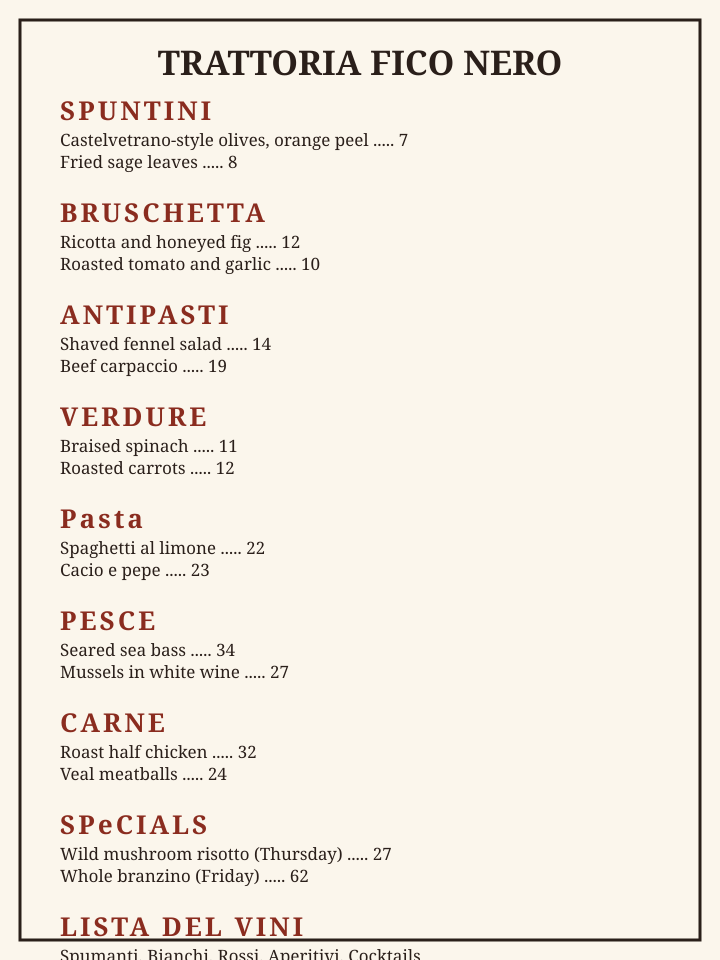

TRATTORIA FICO NERO MENU
A plain-text version of the Trattoria Fico Nero menu is available here.

Trattoria Fico Nero
A neighborhood trattoria with a short menu, a long table and a back garden. Cooking is simple, seasonal and Italian in spirit.
INDIRIZZO
27 Mulberry Alley, Lakeview Falls
A fictional address. Step-free entrance from the street; a ramp leads to the garden.
ORARI
Lunedi al Giovedi • 11:00am–11:00pm
Venerdi, Sabato e Domenica • 10:00am–11:00pm
Walk-ins always welcome.
IT TAKES A VILLAGE
We cook alongside local farmers, bakers and neighbors. See how we give back on the community page.